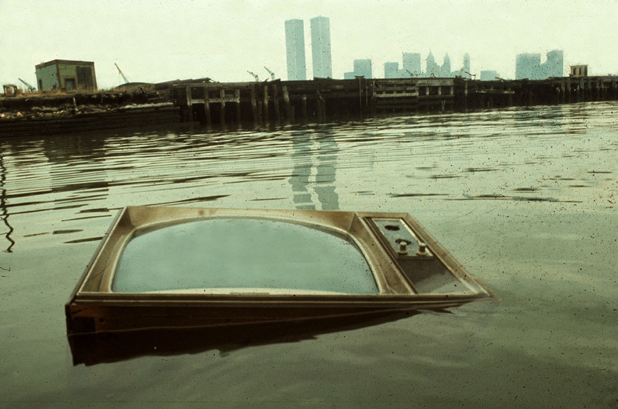

© Steven Siegel, 1980s, New York in the 1980s
“Although New York’s landmarks and neighborhoods are among the most photographed on earth and it seems impossible to get a striking or original image, it’s not,” Mr.Siegel said. “If you’re patient, this ever-changing tapestry is available to you." — Alan Feuer
Find more photos by Steven Siegel here.